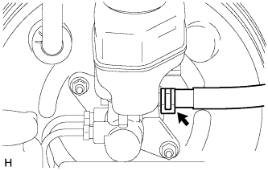

УСИЛИТЕЛЬ ТОРМОЗНОЙ СИСТЕМЫ > СНЯТИЕ |
| 1. СЛЕЙТЕ ТОРМОЗНУЮ ЖИДКОСТЬ |
| 2. СНИМИТЕ КОРПУС ВОЗДУШНОГО ФИЛЬТРА (для моделей с 2TR-FE и правосторонним рулевым управлением) |
Снимите корпус воздушного фильтра (Нажмите здесь).
| 3. СНИМИТЕ КОРПУС ВОЗДУШНОГО ФИЛЬТРА В СБОРЕ (для моделей с 5L-E и правосторонним рулевым управлением) |
Снимите корпус воздушного фильтра в сборе (Нажмите здесь).
| 4. СНИМИТЕ ТРУБКУ СЦЕПЛЕНИЯ (для моделей с механической трансмиссией и левосторонним рулевым управлением) |
|  |
Сдвиньте фиксатор и отсоедините трубопровод привода сцепления.
| 5. СНИМИТЕ ГЛАВНЫЙ ЦИЛИНДР ТОРМОЗНОЙ СИСТЕМЫ В СБОРЕ |
Снимите главный цилиндр тормозной системы в сборе (Нажмите здесь).
| 6. СНИМИТЕ СТЯЖНУЮ ПРУЖИНУ ПЕДАЛИ ТОРМОЗА |
| 7. СНИМИТЕ ШТИФТ ШТОКА |
Снимите фиксатор и штифт штока с педали тормоза.
| 8. ОТСОЕДИНИТЕ ВИЛКУ ШТОКА ГЛАВНОГО ЦИЛИНДРА ТОРМОЗНОЙ СИСТЕМЫ |
Ослабьте контргайку вилки штока главного цилиндра тормозной системы.
Отсоедините вилку штока.
| 9. ОТСОЕДИНИТЕ ВАКУУМНЫЙ ШЛАНГ |
Сдвиньте зажим и отсоедините вакуумный шланг.
| *A | Для моделей с левосторонним рулевым управлением |
| *B | Для моделей с правосторонним рулевым управлением |
| 10. СНИМИТЕ ОБРАТНЫЙ ВАКУУМНЫЙ КЛАПАН ТОРМОЗНОЙ СИСТЕМЫ В СБОРЕ |
Снимите обратный вакуумный клапан в сборе с усилителя тормозной системы в сборе.
| 11. СНИМИТЕ УПЛОТНИТЕЛЬНУЮ ШАЙБУ ОБРАТНОГО КЛАПАНА |
Снимите уплотнительную шайбу обратного вакуумного клапана с усилителя тормозной системы в сборе.
| 12. СНИМИТЕ ГЛАВНЫЙ ЦИЛИНДР СЦЕПЛЕНИЯ В СБОРЕ (для моделей с правосторонним рулевым управлением) |
Снимите главный цилиндр сцепления в сборе (Нажмите здесь).
| 13. ОТСОЕДИНИТЕ ЗАЖИМ ТРУБОПРОВОДА ТОРМОЗНОЙ СИСТЕМЫ (для моделей с правосторонним рулевым управлением) |
 |
Извлеките трубопровод тормозной системы из 2 зажимов трубопровода тормозной системы.
Отсоедините от кузова 2 зажима трубопровода тормозной системы.
| 14. СНИМИТЕ УСИЛИТЕЛЬ ТОРМОЗНОЙ СИСТЕМЫ В СБОРЕ |
 |
Отверните 4 гайки и снимите усилитель тормозной системы в сборе с кузова.
| 15. СНИМИТЕ ПРОКЛАДКУ УСИЛИТЕЛЯ ТОРМОЗНОЙ СИСТЕМЫ |
Снимите прокладку усилителя тормозной системы с усилителя тормозной системы в сборе.
| 16. СНИМИТЕ ВИЛКУ ШТОКА ГЛАВНОГО ТОРМОЗНОГО ЦИЛИНДРА |
Ослабьте контргайку и снимите вилку штока главного цилиндра тормозной системы и контргайку с усилителя тормозной системы в сборе.